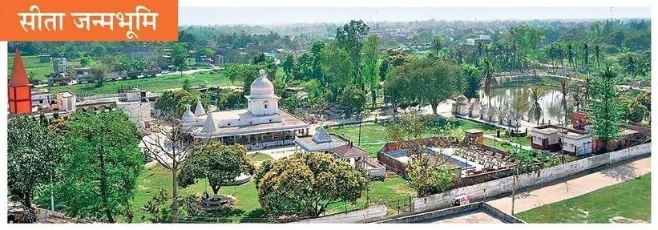
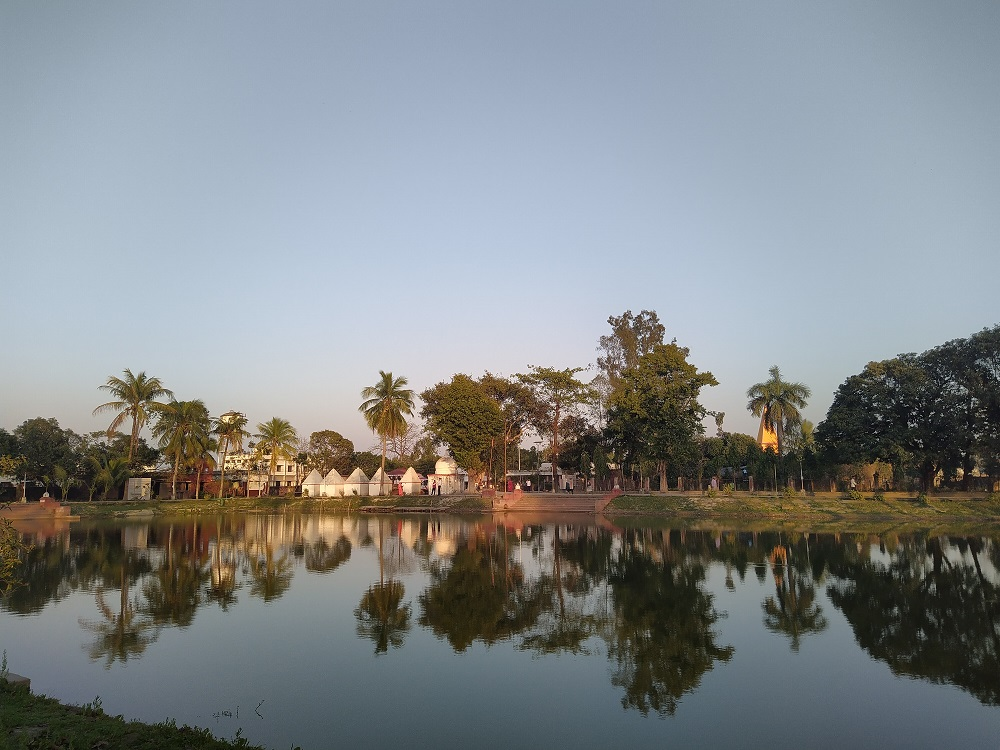
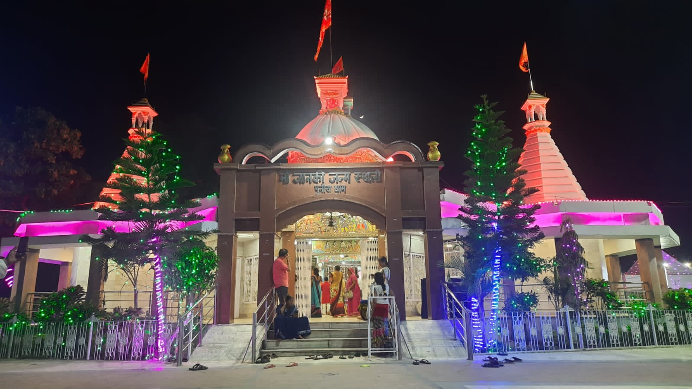

Punaura Dhaam

Ariel view of Punaura temple campus : The birthplace of Sita Ji
According to ancient beliefs, once during the tenure of King Janak of Mithila, there was a severe drought. Then the capital of Mithila used to be Janakpur (now in Nepal). For its solution, King Janak performed the Haleshthi Yagya at the behest of a sage. While plowing the field, the tip of the plow hit a pitcher in which there was a girl. Because of not having a son, King Janak made him his daughter. The tip of the plow is called the seat. That's why she was named Sita. Sita is a symbol of fertility, hence she was called Urvija. Sita being the daughter of Janaka, Vaidehi being the princess of Videha and being born from the land, Sita was also called Bhumija. The place was named Sitamarai, which was later to be called Sitamarhi, due to the infant Sita being kept in a quarry (Parnakutir) first. Until about five hundred years ago, this was a forested area. A saint named Birbaldas reached here searching for Sitapraktya site. This saint, who came from Ayodhya, cleaned the forest and got the Janaki temple built on the place of the stone statue installed by King Janak. 1895 AD. The temple was renovated in Madhya Pradesh by the queen of Tikamgarh. The temple complex, spread over 4860 square feet, also houses a museum of Sita. Located at a distance of two kilometers from Sitamarhi railway station, Janki Kund is also located adjacent to this temple. Punaura village is five kilometers away from Sitamarhi station. People have been believing this to be the manifest site of Sita. A huge fair has been held here on Ramnavami and Vivah Panchami for years.

Punaura Pond, The birth place of Sita ji.

Temple at Punaura